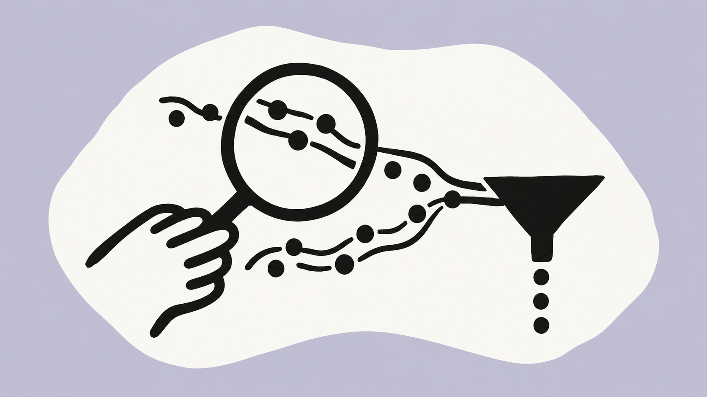

月度访客规模波动，不能只用单月判断增长
UV · 当月有浏览会话的标识数；各月独立去重
正在加载经核验的汇总数据。

“国内”指 kuailutech.cn 站点范围；UV 是浏览器标识去重数，未过滤机器人或内部访问。会话由日志重建。广告标记不等于已核实花费，成功页到达不等于有效线索。
查看统计口径 ↗月份切换同步更新渠道、落地页、行为与漏斗；四个月趋势和方法说明保持完整可见。
UV · 当月有浏览会话的标识数；各月独立去重
会话数 · 首个浏览事件的最近来源；互斥分类
各渠道 UV 存在交叉，不可直接相加；会话可相加。动作率 = 发生演示、试用、下载或咨询点击的会话 ÷ 该渠道会话。
自然搜索会话 · 按最近外部来源域名识别
优先识别 cpc 等付费媒介、广告点击参数，再参考神策来源标签。pcode 没有渠道映射，单独出现时不判为投放。UTM 也可用于非付费传播。
自然搜索会话中的可解析词样本 · 按规则互斥归类
表格仅展示可公开的主要来源，完整会话总量见渠道表。引荐中可能包含自有站点、管理系统与测试流转，不能全部视为新增获客。少量 AI 来源标记仅说明可识别到访，不代表整体 GEO 效果。
页面 UV 按月、按路径去重，跨页面不可相加。入口动作是同会话内后续点击，不是页面的因果贡献。新闻列表与文章统一归入“资讯与内容”。
横轴：入口会话数；右侧：动作会话数／入口会话数
只计算同会话内已观测到“资讯与内容页面 → 后续产品与方案页面”的顺序关系；不把跨日浏览或不同标识的访问拼接成转化。
设备来自埋点的 PC／H5 等标签；不推断操作系统或具体机型。
会话数 · 北京时间 0～23 时；按会话开始时间
时段分布受访客时区、内部使用及自动化访问影响，暂不作为调整广告时段的充分依据。
1～7 个自然日 · 按窗口内首次观测月份分组
6 月为观察起点，不能确定访客此前是否来过。9 月仅纳入 9 月 23 日及以前首次出现的标识，保证观察期完整。
起点为有浏览记录的会话；依次要求预约演示点击 → 表单页浏览 → 表单内“提交”点击 → 成功页浏览。任何一步缺失，后续不补计。内嵌表单或未埋点步骤可能无法被这条路径覆盖。
这条路径不要求先点“预约演示”，用于观察表单访问本身的承接。它与完整预约路径存在重叠，不可相加。
下载点击不等于下载安装；试用点击不等于注册完成；支付结果页不等于已核实到账。当前日志不支持把这些动作合并成成交漏斗。
每列为通过前置步骤的会话数。少量样本只展示计数，不据此判定渠道优劣或扩投。
归并浏览事件后，压缩连续相同路径，统计同会话内相邻页面迁移次数。可能包含刷新、返回与多标签页，不等同于真实点击链。
此处为四个月合计：同一标识的相邻事件，在 30 分钟内从国内域切到其他域。当前仅观察到一次 CDN 域切换，未能建立官网到海外或订购域的完整身份路径。标识不连续的跨域访问无法连接；只作核对，不并入国内 UV 或当作跨站完成率。
| 维度 | 现有数据能回答 | 当前不能回答 |
|---|---|---|
| 流量与渠道 | 标识、浏览、会话及来源标记变化 | 真实人数、完整付费／非付费占比、品牌词／非品牌词排名 |
| 投放效率 | 广告标记会话与站内动作 | 曝光、点击率、花费、获客成本、广告回报率 |
| 线索与收入 | 表单访问、提交点击、有序成功页到达 | 表单校验是否通过、去重线索、有效商机、合同与实收 |
| 人群与体验 | 设备标签、时间、页面路径与观察到的回访 | 地区、行业、公司规模、页面性能指标及流失原因 |
| 数据质量 | 重复事件、时间异常、缺少浏览的访问与高活跃敏感性 | 机器人／内部流量准确识别、跨设备身份、埋点漏报总量 |
以下为建议与验收条件，尚未实施。网站与账户改动需由品牌方安排权限及排期。
| 顺序 | 对应发现与动作 | 需品牌方配合 | 验收方式 |
|---|---|---|---|
| P0 | 建立表单成功／失败事件，记录提交请求结果；用 lead_id 与 CRM 去重线索对账 | 官网研发、销售运营提供事件与线索字段 | 测试成功、校验失败、接口失败、重复提交，逐笔核对事件与 CRM 结果 |
| P0 | 统一自然与投放归因：明确 UTM、广告点击参数和 pcode 映射，保留原始来源 | 投放负责人提供平台账户日报与渠道规则 | 逐渠道测试跳转及跨域参数；按日对账落地会话、平台点击和花费，解释差异 |
| P1 | 统一 page_view／$pageview 触发规则，补足页面、会话和环境标记 | 官网研发确认自定义事件及 SPA 路由上报逻辑 | 首次打开、站内跳转、刷新、前进后退、切换标签各走一遍，消除不可解释的重复 |
| P1 | 核查高流量入口的预约承接，并检查移动端表单与按钮 | 产品与研发安排具体页面的可用性测试 | 按入口／终端记录有序表单完成率；先排除漏报，再评估页面改动 |
| P1 | 为自然搜索入口补充明确的产品或方案去向，保留内容阅读价值 | 内容团队确认高流量文章与对应产品信息 | 以内容→产品顺序会话、后续预约及 CRM 有效线索共同验证，避免只看文章 PV |
| P2 | 建立按月可复算的流量、动作与有效线索报告 | 提供百度统计、百度营销／Bing 投放及 CRM 汇总数据 | 使用固定站点范围、事件定义、归因窗口与排除规则；标出数据断点和样本变化 |
来源为 2026 年 6、7、8 月内地与海外导出文件，以及 9 月内地、香港导出文件，共 8 份表。按事件 URL 的主机名选取 www.kuailutech.cn 与 kuailutech.cn；其他域名独立排除。仅纳入事件时间在 6 月 1 日至 9 月 30 日的记录。文件名不用于判断访问地区。
旧预约演示报告覆盖另一时间段，不复用其结果。没有广告账户、百度统计或 CRM 后台数据参与本次计算。公开页面仅包含汇总信息。
以 DISTINCT_ID 作为浏览器标识。超过 30 分钟无事件时重建会话，跨日不强制切分；统计归属为首个浏览事件的日期和月份。没有浏览事件的会话不进入主要流量与漏斗分母。
浏览包含 page_view 和 $pageview：同一标识、同一会话、同域同路径、2 秒内相邻且事件类型不同的浏览记录归并；同类型快速重复保留。查询参数去除，连续斜线及结尾斜线统一。该浏览量为本报告归并口径，不等同于官方后台 PV。
渠道取会话首个浏览事件的最近来源标签；cpc 等付费媒介和广告点击参数优先归入广告标记。最近来源可能保留此前访问的信息，不能当作完整的当前点击归因。各渠道 UV 可能重叠。
漏斗为同一会话按事件时间顺序推进，不跨标识、不跨会话补步。表单成功页只作代理指标；没有服务端结果或 CRM 对账，不报告真实线索成功率或收入。
单页率指仅有 1 次归并浏览的会话占比，不等于百度统计或 GA4 的跳出率。页面离开时长仅描述事件样本，不累加为阅读时长。缺失数据不补零。
方法参考：神策渠道追踪与广告说明 ↗、Web 预置事件说明 ↗。
内部原始数据、标识级会话与追踪参数不随本报告公开。高活跃阈值只用于敏感性检查，不是机器人识别规则。